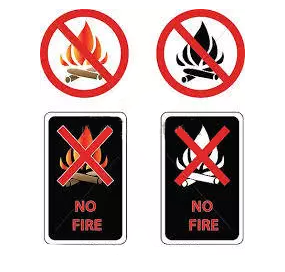
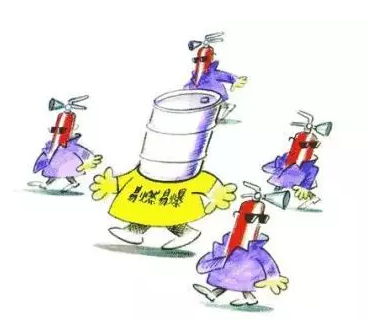
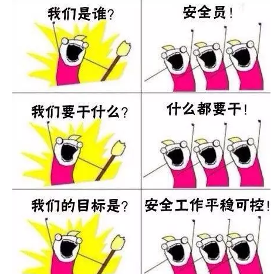
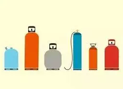
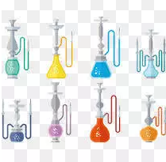
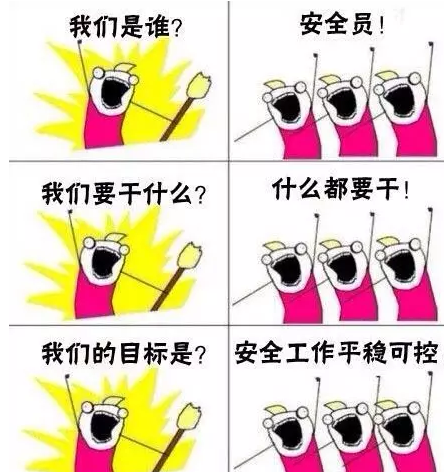

| 我们是谁？！安全员！我们的目标是什么？！安全工作平稳可控！ |
| 平安校园 2017-09-25 |
|
8月17日18时40分左右，中石油大连石化公司140万吨/年重油催化装置裂化装置分馏区域燃料泵着火。据央视新闻报道，目前火势已得到控制，无人员伤亡，事故原因正在调查。现场进、出物料已全部切断，原料无泄漏，厂界4个监测子站数据正常，海面无污染。 从2010年至今，这已经是第七次事故。 还好没有酿成大祸，成吨的石油遇火发生事故可非同小可。对于经常接触易燃易爆品的人员来说，特别是长期泡在实验室的同学，安全守则一定要牢记心中！
使用易燃品安全规则 1不许将易燃物质放置在明火附近和试验地区附近。 2在贮存易燃物质的周围不应有明火作业：点着的煤气(酒精)灯，燃着的火柴等。  3使用蒸馏或升华的易燃物质时应注意： (1)不许用明火加热，加热可用水(油)浴器、电热板或电砂浴，周围也不应有明火； (2)试验仪器应当严密不漏气； (3)在蒸馏装置下面，应有一金属浅盘，(边高80～100厘米)； (4)工作地点应通风良好，四周不可放置可燃性物料； (5)工作时要戴上防护眼镜。
4在试验室内存放各种可燃性物质总量不许超过3千克，每种不得超过1千克。随用随取，用后送回专门的贮放地点。 5遇水易燃物质(如黄磷、过氧化钠、金属钠、钾等)禁止丢入废液桶内。凡能引起火的物质(如废油、废有机溶剂)应集中在专门的容器内放在安全的地方，不得任意乱放。禁止将性质相抵触的，能引起燃爆的易燃物贮存在一起。使用中应留有安全距离。  6应经常检查防火设备，如灭火器，黄沙、石棉及毛毡等。 7可燃的尤其是易挥发的可燃物，应存放在密闭的容器中，不许用无盖的开口容器贮存。
 8一旦发生失火事故，首先应撤除一切热源，关闭煤气和电闸，然后用砂子或石棉布盖住失火地点或用四氯化碳等灭火器等灭火。除酒精外，化学物品失火，不许用水灭火。 使用易爆品安全规则
1预防由于内外压力差引起爆炸的措施， (1)仔细检查供真空操作用的全部仪器有无裂纹。不许使用有裂纹 的仪器； (2)使用前应检查容器真空度是否合格。检查时应将容器用布包好； (3)检查安全标志和防火措施。
 2使用气瓶时注意在定检周期内使用，并要求： (1)不能使气瓶受碰撞或冲击。不许用人背或在地下滚动的办法运气瓶。立着使用应有固定措施。开气时气嘴不能对人； (2)气瓶不能放在电炉，暖气附近，不能放在日光照射的地方。禁止在气瓶旁抽烟； (3)气瓶必须有减压阀门才能使用； (4)氧气瓶，氧气表以及导管，禁止与油类物质接触。 3有爆炸危险性的药品(过氧化钠、过氧化氢、浓高氯酸等)，在试验室内只许放一小部分，并应保存在干燥阴凉的地方。  4禁止将性质相抵触的能引起燃烧爆炸的物品贮存在一起或使用中安全距离不够，如： (1)禁止浓硫酸和结晶状高锰酸钾接触； (2)禁止和有机物一起研磨氯酸钾； ( 3)禁止和有机物一起研磨硝盐。有机物不得和浓硝酸一起混合及加热。
5炔铜、乙炔银的干粉最易爆炸，故在试验完毕时，将它和溶液一同倒在室外，用土深埋。 6使用乙醚，首先应按下法检查过氧化醚是否存在：取10毫升乙醚放入试管中，加入新制的10％碘化钾溶液1毫升，摇匀后放置1分钟，如乙醚层显黄色，则不能用此乙醚。 最后再大声呼喊我们的目标  |
|
|
|
|
|
|
|